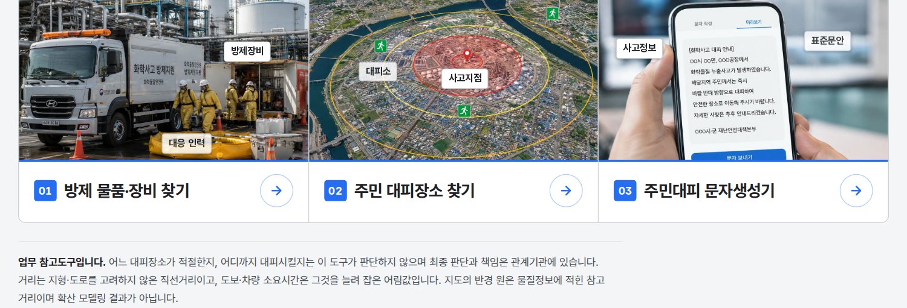
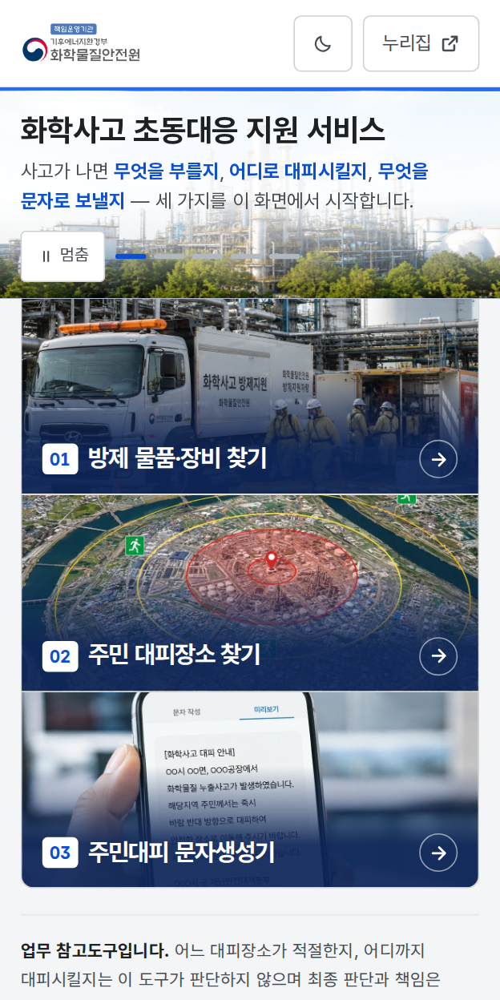
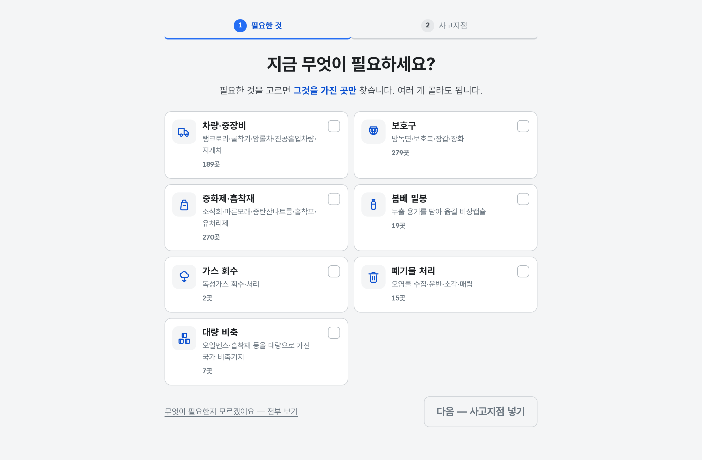
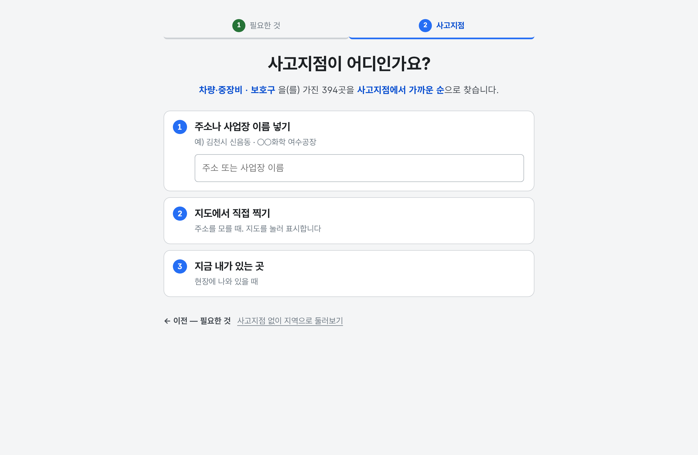
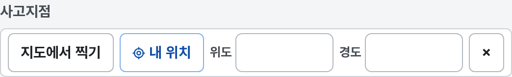
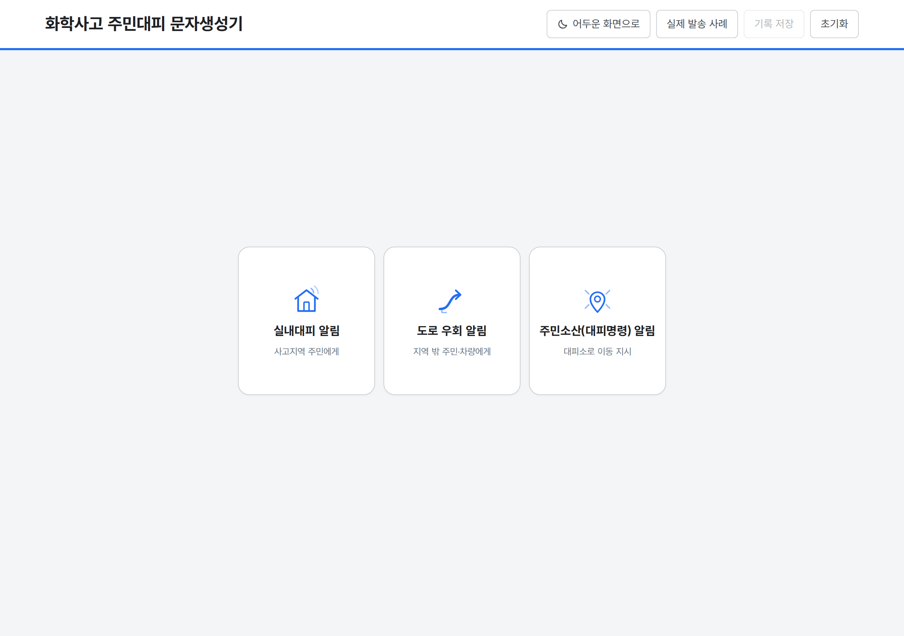
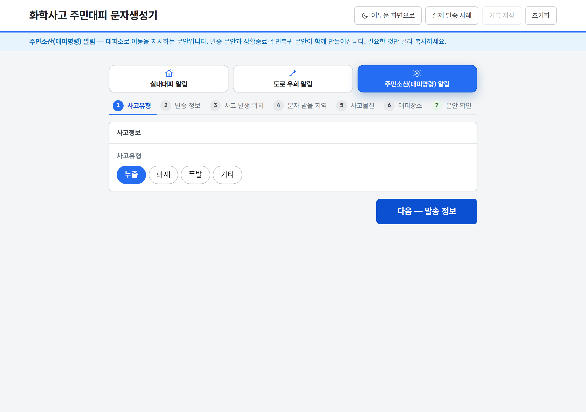

화학물질안전원 · 지자체 담당자용
화학사고 초동대응
지원 서비스 사용설명서
화학사고가 났을 때, 몇 초 안에 필요한 것을 찾는 업무도구 세 가지
인터넷 주소 (아래를 입력하거나 눌러서 접속)
https://chem-safety-kr.pages.dev
설치할 프로그램이 없습니다. 회원가입도 없습니다.
인터넷이 되는 PC·휴대전화에서 위 주소를 열면 바로 쓸 수 있습니다.
1무엇을 하는 서비스인가요?
화학사고가 났을 때 담당자가 급하게 찾아야 하는 세 가지를 모아 둔
것입니다. 세 가지는 서로 따로 쓸 수 있고, 순서도 정해져 있지 않습니다.
| 01 방제 물품·장비 찾기 |
지금 필요한 물품·장비(굴착기·방독면·흡착포 등)를 고르면,
사고지점 주변에서 그것을 가진 곳을 가까운 순으로 찾아 전화번호까지
보여 줍니다. |
| 02 주민 대피장소 찾기 |
사고지점을 넣으면 주변 대피장소를 거리·도보시간과 함께 찾습니다.
수용인원과 관할부서 전화번호도 함께 나옵니다. |
| 03 주민대피 문자생성기 |
사고 정보를 칸에 넣으면 재난문자 표준문안이 만들어집니다.
글자수도 세어 줍니다. 복사해서 문자발송시스템에 붙이면 됩니다. |
먼저 알아 두셔야 할 것 — 이 도구는 판단하지 않습니다
어느 대피장소가 적절한지, 어디까지 대피시킬지는 담당자가 정합니다.
이 도구는 자료를 모아 보여 줄 뿐이고, 최종 판단과 책임은 관계기관에
있습니다.
화면에 나오는 거리는 직선거리이고, 도보·차량 시간은 어림값입니다.
실제 도로를 따라 계산한 값이 아닙니다. 지도에 그려지는 동그란 반경 원은
참고 거리이며 확산 모델링 결과가 아닙니다.
업체는 폐업하고 담당자는 바뀝니다. 연락하기 전에 가동 여부를
확인하세요.
3첫 화면 — 세 가지 중 하나를 고릅니다
주소를 열면 이 화면이 나옵니다. 카드를 누르면 그 도구로
들어갑니다. 마우스를 카드에 올리면 무엇을 하는 도구인지 설명이 나옵니다.

PC 화면. 카드 아래에 자료 건수와 기준일이 적혀 있습니다.

휴대전화에서는 카드가 위아래로 놓입니다. 하는 일은 같습니다.
글씨가 눈에 부실 때 · 밤에 쓸 때
화면 오른쪽 위 ‘어두운 화면으로’ 를 누르면 검은 바탕으로 바뀝니다.
한 번 고르면 기억되고, 세 도구 모두 같이 바뀝니다. 되돌리려면 같은 자리의
‘밝은 화면으로’ 를 누릅니다.
401 방제 물품·장비 찾기
현장에서 아는 것은 “지금 무엇이 필요한가” 입니다.
그래서 이 도구는 그것부터 묻습니다. 두 걸음이면 끝납니다.
걸음 1 — 지금 무엇이 필요하세요?
- 필요한 것의 칸을 눌러서 고릅니다. 여러 개 골라도 됩니다.
칸마다 ‘몇 곳이 있는지’가 적혀 있습니다.
- 다 골랐으면 오른쪽 아래 ‘다음 — 사고지점 넣기’ 를 누릅니다.
무엇이 필요한지 아직 모르겠으면
왼쪽 아래 ‘무엇이 필요한지 모르겠어요 — 전부 보기’ 를 누르세요.
고르지 않고 전부 볼 수 있습니다.

걸음 1. 일곱 갈래 중에서 고릅니다.
걸음 2 — 사고지점이 어디인가요?
세 가지 방법 중 편한 것 하나만 하면 됩니다.
| 1 주소·사업장 이름 |
칸에 주소나 사업장 이름을 넣습니다. (예: 김천시 신음동, ○○화학 여수공장)
칸 아래에 나오는 결과를 누르면 그 자리로 잡힙니다. |
|---|
| 2 지도에서 직접 찍기 |
주소를 모를 때. 지도가 열리고, 지도를 눌러 사고지점을 표시합니다. |
|---|
| 3 지금 내가 있는 곳 |
현장에 나와 있을 때. 누르면 이 기기의 위치를 사고지점으로 잡습니다.
(브라우저가 위치 사용을 물으면 허용을 누르세요) |
|---|

걸음 2. 위에서부터 순서대로 편한 것 하나를 쓰면 됩니다.
502 주민 대피장소 찾기
사고지점 주변의 대피장소를 찾습니다. 사고지점을 넣는 방법은
01 과 같습니다.
- 화면 위쪽 ‘사고지점’ 줄에서 —
‘사고지점 찍기’(지도를 눌러 표시) 또는 ‘내 위치’ 를 누릅니다.
좌표를 받아 적었다면 위도·경도 칸에 넣어도 됩니다.
왼쪽 주소·장소 검색 칸에 지명을 넣어 찾을 수도 있습니다.
- 사고지점이 잡히면 가까운 대피장소가 목록과 지도에 함께 나옵니다.
- 목록에서 수용인원 · 주소 · 관할부서 전화번호를 확인합니다.
- 필요하면 오른쪽 정렬을 ‘수용인원 많은 순’ 으로 바꿉니다.

화면 위쪽 ‘사고지점’ 줄. 여기서 시작합니다.
 초록 동그라미가 대피장소, 빨간 십자가 사고지점입니다.
실제 화면에는 도로·건물 배경지도가 함께 보입니다.
초록 동그라미가 대피장소, 빨간 십자가 사고지점입니다.
실제 화면에는 도로·건물 배경지도가 함께 보입니다.
문자 도구로 값을 그대로 넘길 수 있습니다
대피장소를 고른 뒤 ‘이 내용으로 주민대피 문자 만들기’ 단추를 누르면,
사고지점·대피장소가 문자 도구에 이미 채워진 상태로 열립니다.
같은 값을 두 번 입력하지 않아도 됩니다.
603 주민대피 문자생성기
사고 정보를 넣으면 승인받은 표준문안이 만들어집니다.
문장을 직접 쓰지 않습니다 — 미리 정해진 문안의 빈칸이 채워지는 방식입니다.
걸음 1 — 어떤 알림인지 고릅니다
| 실내대피 알림 |
집 안에 있으라고 알릴 때 (창문 닫기 등) |
|---|
| 도로 우회 알림 |
차량 통행을 돌리게 할 때 |
|---|
| 주민소산(대피명령) 알림 |
대피소로 이동을 지시할 때 |
|---|

먼저 이 셋 중 하나를 누릅니다.
걸음 2 이후 — 한 화면에 하나씩 묻습니다
- 고르면 위에 진행 표시가 생깁니다 (사고유형 → 발송 정보 →
사고 발생 위치 → 문자 받을 지역 → 사고물질 → 대피장소 → 문안 확인).
- 화면에 나오는 칸을 채우고 아래쪽 ‘다음 — ○○○’ 을 누릅니다.
(단추에 다음에 무엇을 묻는지 적혀 있습니다. 마지막에는
‘문안 만들기’ 가 됩니다.)
순서대로 갈 필요는 없습니다. 진행 표시의 이름을 눌러
아는 것부터 채워도 됩니다. 다 채운 걸음에는 초록 체크가 붙습니다.
- 대피장소는 ‘지도에서 찾기’ 나 ‘목록에서 찾기’ 로
골라 넣을 수 있습니다.

위쪽 진행 표시로 지금 어디까지 왔는지 늘 보입니다.